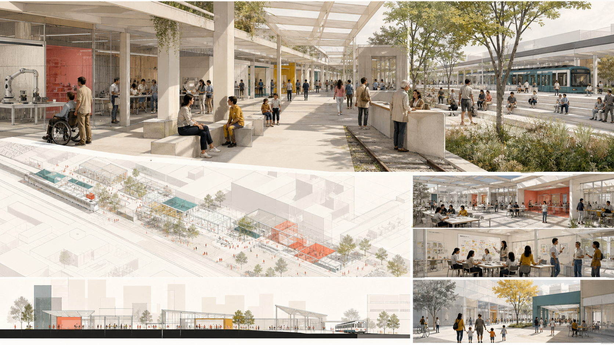

全栈兼容基准台
产业测试验证
一条公共界面，三座城市院落，十二个可问责的AI房间
暂定边界 ≠ 法定红线

产业生态与未来城市机制
用地、界面、交通、蓝绿与项目
基准院、转译院、采纳院


参考体量只检验开放首层节奏；高度、容积率、退线与拆改留均待正式资料。
八个项目遵循先可逆、后固定。
确定性验证 / 空间拓扑 / 离线展示 / 专业证据

产业测试验证
产业测试验证
公共/运营场景
公共/运营场景
产业测试验证
公共/运营场景
公共/运营场景
公共/运营场景
公共/运营场景
公共/运营场景
公共/运营场景
公共/运营场景
| ID | 项目 | 分期 | 依赖 |
|---|---|---|---|
| R-01 | 十二门廊先导包 | 1 | operator, ownership and accessibility audit |
| R-02 | 三处人工兜底服务桌 | 1 | service agreements and staffing |
| R-03 | 南段四象限步行缝合预研 | 1 | station and traffic survey |
| R-04 | AI原点开源发布门廊 | 2 | campus/park/community agreement |
| R-05 | 连续无障碍与荫凉线路 | 2 | levels, utilities and tree survey |
| R-06 | 透明测试间和标准看台 | 2 | industry safety protocol |
| R-07 | 北段全栈基准院 | 3 | official key-area and industry program |
| R-08 | 年度贡献账本与城市节事 | 3 | governance board and long-term budget |
km² · 暂定包络
概念绿地功能
概念公共空间

正式公告、清权任务书、官方标准、暂定几何与六个案例均逐条登记用途和限制。
边界、文保、控规、道路、权属、市政与现状建筑均有复算触发条件。
最终状态以 self_check.json 为准。